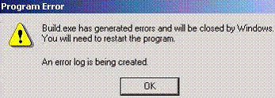

Service History
Subject: ASE NS-8040 Build.exe error
Handler Model: NS-8040 (S/N: 181422)
Controller: RC520
Date: 2 Dec 2009
Symptom
NS-8040 from Vitesse encounter a problem on NS8040 handler (S/N:181422), HMI version: 1.91.
This handler is consigned from US. Would like to check what’s problem on the handler.
Here are the following descriptions:
- Selected Maintenance -> Build -> data handling -> Temperature calibration data
- Secondly selected the source & destination setup and press “OK”
- Error occur (Refer to below pictorial)
- After program error, handler will hang for awhile.

Did create a new setup file and copy temperature calibration data. – Same error occur
Select Tray form data or Hotplate form data. - No error occur
Action
5 Jan 2010 ASE installed HMI version 2.5 and no error
Cause
Build.exe error could be due to software bug in HMI 1.91, HMI 2.5 does not have this problem.